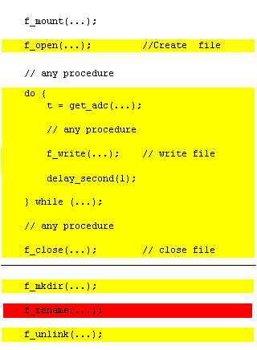
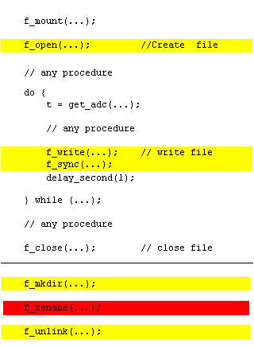

FatFs vs. Tiny-FatFs
For most applications, such as portable audio and data logger, Tiny-FatFs is the best choice. However because the Tiny-FatFs does not support FAT32 in default, there is a limitation that can handle only tiny storage upto 2GB(4GB in FAT64). The FAT32 support can be added by _USE_FAT32 option with an additional code size. The FatFs is suitable for fast multiple files access, and for multiple drive system.
| Memory Size | FAT Type |
|---|
| <= 64MB | FAT12 |
| 128MB - 2GB | FAT16 |
| >= 4GB | FAT32 |
Rignt table shows the correspondence between memory size and FAT type for SD memroy card and they are shipped with this format. The data area is justified to the erase block boundary and the memory card works with the best performance. For that reason, the memory card should not be reformated with PC. When cluster size or FAT type is changed, the write performance can be decreased.
Performance effective file access
For good performance on reading/writing files on the small embedded system, application program should consider what process is done in the FatFs module. The file data on the disk is transferred by f_read function in following process.
Figure 1. Sector miss-aligned read (short)

Figure 2. Sector miss-aligned read (long)

Figure 3. Sector aligned read

The file I/O buffer means a sector buffer to read/write a partial data on the sector. On the FatFs, member buffer[] in the file object is used. On the Tiny-FatFs, member win[] in the file system object is used.
Tiny-FatFs processes all data transfer and access to the FAT/directory with only one sector buffer, so that FAT sector cached into the buffer is lost and it must reloaded at every cluster boundary. FatFs has a FAT/directory buffer separated from file I/O buffer, the frequency of FAT accesses is only 1/341, 1/256 or 1/128 (when cluster is contiguous) compared to Tiny-FatFs. Thus the Tiny-FatFs is sacrificing its performance in compensation for very small memory footprint.
Figure 1 shows that partial sector data is transferred via the file I/O buffer. At long data transfer shown in Figure 2, middle of transfer data that aligned to sector boundary is transferred into memory directly. Figure 3 shows that entier transfer data is aligned to the sector boundary. In this case, file I/O buffer is not used. At the unbuffered transfer, maximum extent of sectors are read with disk_read function at a time but it never across cluster boundary even if it is contiguous.
Therefore taking effort to sector aligned read/write accesss eliminates memcpy and the read/write performance will be improved. Besides the effect, cached FAT sector is not flushed during read/write access on the Tiny-FatFs, so that it can achieve same performance as FatFs and its small memory footprint simultanesously.
Critical section
When write operation to the FAT file system is interrupted due to any accidental failure, such as sudden blackout, incorrect disk removal and unrecoverable data error, the FAT structure can be destroyed. Following images shows the critical section on the FatFs module.
Figure 4. Long critical section

Figure 5. Minimized critical section

An interruption in the red section can cause a cross link; as a result, the file/directory being changed will be lost. There is one or more possibility listed below when an interruption in the yellow section is occured.
- File data being rewrited is collapted.
- A file being appended returns initial state.
- A file created as new is gone.
- A file created as new or in overwrite remains with length of zero.
- Efficiency of disk use gets worse due to lost chain.
Each case does not affect the files that not in write operation. To minimize risk of data loss, the critical section can be minimized like shown in Figure 5 by minimizing the time that file is opened in write mode and using f_sync function properly.